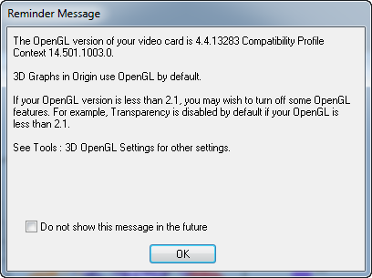

3D-Punktdiagramm mit Farbabbildung
3D-Scatter-ColorMap
Zusammenfassung
Dieses Tutorial zeigt, wie ein 3D-Punktdiagramm mit Z-Farbabbildung aus XYZ-Daten in einem Arbeitsblatt erstellt wird, wobei die Symbolgröße proportional zu den Daten in einer festgelegten Spalte sind und Projektionen der Daten auf allen drei Achsenebenen erstellt werden.

Was Sie lernen werden
Dieses Tutorial zeigt Ihnen, wie Sie:
- ein 3D-Punktdiagramm mit Z-Farbabbildung erzeugen,
- die Symbolgröße proportional zu den Daten in einer Spalte festlegen,
- die Punktprojektionen auf Achsenebenen hinzufügen und benutzerdefiniert anpassen.
Schritte
Dieses Tutorial basiert auf dem Projekt: <Origin-Verzeichnis>\Samples\Tutorial Data.opju.
Sie können dieses Diagramm auch im Lernzentrum finden. (Wählen Sie Hilfe: Lernzentrum im Menü oder drücken Sie die Taste F11. Öffnen Sie dann Diagrammbeispiel: 3D Symbol Bar and Wall.)
- Öffnen Sie Tutorial Data.opju und navigieren Sie zum Ordner 3D Scatter with Colormap im Projekt Explorer (PE).
- Aktivieren Sie die Arbeitsmappe A3DScatter und markieren Sie Spalte col(C). Wählen Sie Zeichnen: 3D: 3D-Punktdiagramm, um ein Punktdiagramm zu erzeugen.
- Ein Fenster mit einer Erinnerungsmeldung wie unten wird geöffnet, das Ihnen mitteilt, dass das Diagramm vielleicht nicht korrekt angezeigt wird, wenn die OpenGL-Version älter ist als 2.1. Die OpenGL-Version Ihrer Grafikkarte wird in dem Erinnerungsfenster aufgeführt. Klicken Sie auf OK, um das Fenster zu schließen.
- 
- Hinweis: Möglicherweise ist der Entwurfsmodus eingeschaltet, wenn die OpenGL-Version zu alt ist.
- Klicken Sie zum Öffnen des Dialogs Details Zeichnung doppelt auf das Diagramm. Wenn das linke Bedienfeld nicht erweitert ist, verwenden Sie die Schaltfläche
 unten links im Dialog, um dies zu tun. Erweitern Sie die Option Layer1 und markieren Sie die Ebene Original. Diese enthält die Originaldaten. In diesem Dialog wird das 3D-Punktdiagramm benutzerdefiniert angepasst.
unten links im Dialog, um dies zu tun. Erweitern Sie die Option Layer1 und markieren Sie die Ebene Original. Diese enthält die Originaldaten. In diesem Dialog wird das 3D-Punktdiagramm benutzerdefiniert angepasst.
- Wechseln Sie zur Registerkarte Symbol und setzen Sie die Form auf Ball. Um die Ballgrößen zum Zeigen der Unterschiede zwischen den Werten der Engine Displacement zu verwenden, wählen Sie für die Größe die Spalte Col("Engine Displacement") und setzen den Skalierungsfaktor auf 0,005. Machen Sie die Eingabe in dem Bearbeitungsfeld manuell, anstatt das Auswahlmenü zu verwenden. Klicken Sie für die Farbe auf das Auswahlmenü und wählen Sie dann die Registerkarte Nach Punkten der Farbauswahl. Klicken Sie auf Farbpalette und wählen Sie Col(C): "Power", um eine Farbabbildung des Z-Wertes einzuführen. Setzen Sie die Transparenz auf 25%.
- Wählen Sie die Registerkarte Farbpalette. Klicken Sie auf Ebene, um den Dialog Ebenen festlegen zu öffnen. Setzen Sie Von auf 30. Wählen Sie Inkrement und setzen Sie es auf 15. Legen Sie die Anz. Nebenebenen auf 9. Klicken Sie auf OK.
- Klicken Sie auf die Überschrift Füllung, um den Dialog Füllung zu öffnen. Wählen Sie Beschränkte Mischung. Klicken Sie auf die Standardfarbe für Von und dann auf das quadratische Feld unter dem Abschnitt Benutzerdefiniert der Farbeinstellungen, um den Dialog Farben zu öffnen. Setzen Sie im Dialog Farben die Optionen Rot, Grün und Blau unten rechts auf 74, 74 bzw. 255. Tun Sie dasselbe für die Farbe von Bis und setzen Sie die Optionen Rot, Grün und Blau auf 255, 100 bzw. 255. Klicken Sie auf OK.
- Klicken Sie auf die Füllfarbe von <30, um den Dialog Füllung zu öffnen. Setzen Sie die Füllfarbe auf Keine. Klicken Sie auf OK. Wiederholen Sie diesen Schritt, um die Füllfarbe der Ebene >168 auf Keine festzulegen. Auf diese Weise wird sichergestellt, dass die Ebenen ober- und unterhalb des festgelegten Bereichs keine Farbe haben.
- Der nächste Schritt besteht in dem Hinzufügen der Datenprojektionen. Wählen Sie im linken Bedienfeld des Dialogs Details Zeichnung die Option oberhalb von Original und aktivieren Sie die Option Voll unabhängig. Dadurch können die Projektionen separat benutzerdefiniert angepasst werden, sollten sie aktiviert sein. Aktivieren Sie die Kontrollkästchen XY-Projektion, ZX-Projektion und YZ-Projektion, um die Punktprojektionen auf allen drei Ebenen zu aktivieren.
- Die Farben der Projektionen der Ebene XY-Projektion definieren Sie auf der Registerkarte Symbol, indem Sie seine Farbe auf Olive setzen (12. allgemeine Farbe). Setzen Sie die Symbolfarbe der ZX-Projektion und YZ-Projection aus Rot (die 2. allgemeine Farbe) bzw. Orange (die 15. allgemeine Farbe). Klicken Sie auf OK.
- Um die Gitternetzlinien zu entfernen, klicken Sie doppelt auf die X-Achse. Der Dialog Achsen wird geöffnet. Wählen Sie die Registerkarte Gitternetze im rechten Bedienfeld, halten Sie die Strg-Taste gedrückt und wählen Sie die Y- und Z-Achse aus, um die Einstellungen zusammen anzupassen. Deaktivieren Sie dann das Kontrollkästchen Zeigen unter Hauptgitternetzlinien, um die Hauptgitternetzlinien auf allen Achsen auszublenden.
- Im nächsten Schritt wird die Skalierung für die Achsen geändert. Nehmen Sie auf der Registerkarte Skalierung für jede Achse die folgenden Einstellungen vor: Setzen Sie für die X-Achse die Werte für von, bis und Inkrement der großen Hilfsstriche auf 5, 30 bzw. 5und aktivieren Sie dann das Kontrollkästchen Umgekehrt; legen Sie für die Y-Achse die Werte 5, 40 sowie 10 fest und aktivieren Sie das Kontrollkästchen Umgekehrt; für die Z-Achse setzen Sie die Werte 20, 180 bzw. 20. Klicken Sie auf OK.
- Die Farbe für den Hintergrund des gesamten Fensters weisen Sie wieder über den Dialog Details Zeichnung zu. Wählen Sie Graph im linken Bedienfeld. Wählen Sie die Registerkarte Anzeige. Setzen Sie die Farbe auf Hellgrau. Klicken Sie auf OK.
- Löschen Sie das standardmäßig erstellte Legendenobjekt. Es soll stattdessen eine Farbskalenlegende hinzugefügt werden.
- Dazu klicken Sie auf die Schaltfläche Farbskala hinzufügen
 in der Symbolleiste Objekt zu Diagramm hinzufügen. Klicken Sie doppelt auf die Farbskala, um den Dialog Eigenschaften Farbskala zu öffnen. Legen Sie das Format der Farbskala entsprechend den Screenshots unten fest:
in der Symbolleiste Objekt zu Diagramm hinzufügen. Klicken Sie doppelt auf die Farbskala, um den Dialog Eigenschaften Farbskala zu öffnen. Legen Sie das Format der Farbskala entsprechend den Screenshots unten fest:
- Klicken Sie mit der rechten Maustaste auf das Seitenlayer, um das Kontextmenü aufzurufen. Wählen Sie Layertitel hinzufügen/modifizieren, um Symbolgröße proportional zu Engine Displacement in das Textfeld einzugeben, das als Layertitel angezeigt wird.
- Das Diagramm sollte folgendermaßen aussehen. Drehen Sie es, um alle Seiten zu untersuchen: